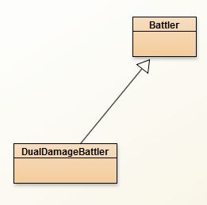
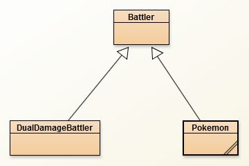
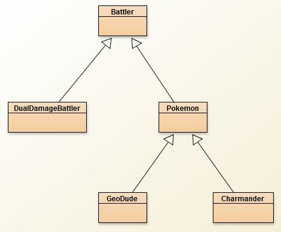

Battler:
For this inheritance tree we are going to create objects that can “battle” each other. We’ll start with the top of the hierarchy:
Create a class named Battler which is to simulate one character in the ‘battle’. This class should have three instance fields: A String for the name and two ints to represent the health and the attack strength of the character..
- Add a constructor that takes in the name, health, and attack of the Battler and assigns them to the instance fields.
- Add the three basic accessors for the attack, health, and name.
- Add a void method named loseHealth, which will take in a value and subtract it from the health. Since the minimum health points should be 0, add an if statement to prevent the health instance field from being negative.Add a boolean method isAlive(), which returns true if the Battler’s health is above 0.
- Add a toString that will return a String that contains the name, health, and attack of the Battler. The formatting is up to you.
- In order to give the Battler the ability to attack another Battler, add the following method:
public void attack(Battler other)
This method will simulate attacking another Battler. First you should check if both Battlers are still alive, and if so the parameter Battler should lose health according to your attack value.
Visual Battling:
Text based battling is a little chaotic and hard to follow. Instead, Sacco has designed a simple GUI that will allow you to take your time. In order to keep the GUI up to date, each Battler is going to be able to provide an SPanel object that has the prudent information on it (think of it like a visual toString.
You probably haven’t used any of these objects before (they're saccojar specific), so I’ve commented the basics. Don’t forget that my variables name, healthPoints, and attackValue may need to be modified to fit your object's instance fields.
YOU MUST IMPORT sacco.gui.*;
public SPanel getPanel()
{
//Construct an SPanel object that's a Grid with 3 rows and 1 column
SPanel pan = new SPanel(new GridLayout(3,1));
//Add a border with the Battler's name on it
pan.setTitledBorder(name);
//Add two labels with the health and attack
pan.add(new SLabel("Hit Points: "+healthPoints));
pan.add(new SLabel("Attack Points: "+attackValue));
//Add one more label that says "Alive" or "Dead"
String isAlive;
if(this.isAlive())
isAlive = "Alive";
else
isAlive = "Not Alive";
pan.add(new SLabel(isAlive));
return pan;
}
The BattleArena:
The BattleArena class is a simple GUI that displays the SPanels that each Battler returns, as well as two buttons so you can choose which Battler to do the attacking. You do not have to know how this class works, just know that it is constructed with two Battler objects and that calling the launch method will display it.
Copy the class below into your project:
import sacco.gui.*;
public class BattleArena implements ButtonListener
{
private Battler a,b;
private SFrame frame;
private SPanel battlerPan;
private SButton avb,bva;
public BattleArena(Battler a, Battler b)
{
this.a = a;
this.b = b;
initFrame();
}
private void initFrame()
{
frame= new SFrame("Battle Arena");
frame.setLayout(new BorderLayout());
battlerPan = new SPanel(new GridLayout(1,2));
updateBattlers();
frame.add(BorderLayout.CENTER, battlerPan);
avb = new SButton("Attack "+b.getName());
bva = new SButton("Attack "+a.getName());
avb.addButtonListener(this);
bva.addButtonListener(this);
SPanel buttons = new SPanel(new GridLayout(1,2));
buttons.add(avb);
buttons.add(bva);
frame.add(BorderLayout.SOUTH, buttons);
frame.exitOnClose();
}
public void onButtonPress(SButton source)
{
if(source == avb)
a.attack(b);
if(source == bva)
b.attack(a);
updateBattlers();
}
private void updateBattlers()
{
battlerPan.getSwing().removeAll();
battlerPan.add(a.getPanel());
battlerPan.add(b.getPanel());
frame.getSwing().revalidate();
}
public void launch()
{
frame.pack();
frame.setVisible(true);
}
}
Runner:
To get things started, we’ll create two Battler objects and use them to construct an arena:
public static void battlerRunner()
{
Battler a = new Battler("Steve",50,3);
Battler b = new Battler("Stefan",50,4);
BattleArena arena = new BattleArena(a,b);
arena.launch();
}
Once this is running, click to attack and make sure that one of the healths goes down by 3 while the other goes down by 4. Also make sure that nobody's health passes 0.
Extending Battler: DualDamageBattler

In some games, when you attack another character you automatically take their attack damage. Create a class named DualDamageBattler, which should extend Battler. This class should act the same way as the Battler does, but when attacking both characters should take damage.
- Add a three argument constructor with the same three parameters that Battler’s constructor does.
- Override the attack method and change it so that it deals the damage to both of the Battlers.
Try it out with the following runner. This time either button should cause both characters to lose health.
public static void dualDamageRunner()
{
DualDamageBattler a = new DualDamageBattler("Oasis Snapjaw",7,2);
DualDamageBattler b = new DualDamageBattler("Warden",7,1);
BattleArena arena = new BattleArena(a,b);
arena.launch();
}
Thank you POLYMORPHISM! If I couldn’t say that every DualDamageBattler IS-A Battler. They would not be compatible with the BattleArena.
Extending Battler Differently: Pokemon

Pokemon are like Battlers, but they have a “type”. Certain types of Pokemon are stronger against other types of Pokemon and their attacks are larger.
Create the Pokemon class, which should extend Battler. A Pokemon should also have two Strings as instance fields that will represent the type that the Pokemon is, as well as the type that this Pokemon is strong against.
- Add a basic accessor to the Pokemon class.
- The constructor for Pokemon will take in 5 parameters. The name, the type, the type it’s strong against, the health points, and the attack.
A Pokemon does double damage to other Pokemon that are the type that it is strong against. It is time to override the attack method.
public void attack(Battler other)
Resist the urge to change the parameter to be Pokemon instead of Battler. We have to override the original method, which takes in Battler specifically. We’ll just have to be careful to only battle Pokemon with each other. Implement the attack method so that the Pokemon will first check the type and then do double damage if it’s the this Pokemon is strong against. Beware: This method may require the use of casting.
One last thing that the attack method should do is to System.out.println the name of the Pokemon, in all caps and followed by at least three exclamation points.
Test out your Pokemon class with the following runner:
public static void pokeRunner()
{
Pokemon a = new Pokemon("Mr. Sacco", "teacher", "student",Integer.MAX_VALUE,20);
Pokemon b = new Pokemon("John Doe", "student", "homework",100,1);
BattleArena arena = new BattleArena(a,b);
arena.launch();
}
Make sure that when Mr. Sacco attacks John Doe, John loses 40 points and when John Doe attacks Mr. Sacco, Sacco loses 1 point.
Changing the Panel:
Right now the SPanel that Pokemon returns is lacking. Override the getPanel method by copy/pasting from the Battler class and modifying it so that the GridLayout is 5x1 instead of 3x1. After that modify the code so that it adds two more labels that include the type and what it’s strong against. Look at the existing code to assist you. Run the runner one more time to make sure that it works.
Specific Pokemon Classes:

Now that we've defined the behavior of the Pokemon class, we'll create two specific Pokemon. Since most of the work is already done, these classes should be relatively simple using inheritance.
Create a class named Charmander, which extends the Pokemon class.
Charmander should have a DEFAULT constructor that sets the name to “Charmander”, the type to “fire”, the type to be strong against is “Ice”, the health to 39, and the attack to 9. We’ve inherited so much from Pokemon, we don’t need to override any methods.
Create a class named GeoDude, which extends the Pokemon class.
GeoDude should have a DEFAULT constructor that sets the name to “Geo Dude”, the type to “rock”, the type to be strong against is “fire”, the health to 39, and the attack to 5. We’ve inherited so much from Pokemon, we don’t need to override any methods.
Once both of those compile, use the following runner:
public static void geoVsChar()
{
Pokemon a = new Charmander();
Pokemon b = new GeoDude();
BattleArena arena = new BattleArena(a,b);
arena.launch();
}
Run the runner. When Charmander attacks Geo Dude, “CHARMANDER!!!” should print out and Geo Dude should lose 9 points. When Geo Dude attacks charmander, “Geo DUDE!!!” should print out and Charmander should lose 10 damage (instead of 5).